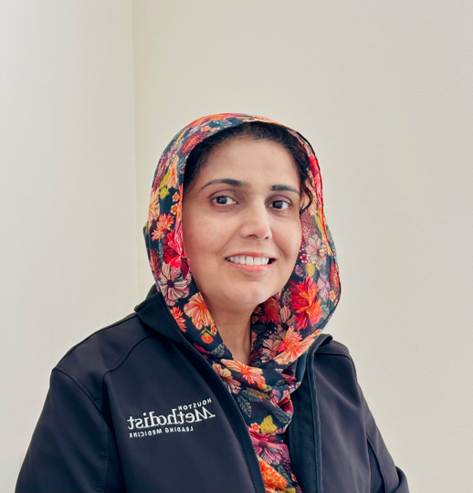

Precision Ventilation via Digital Twin
Real-time lung simulation, predictive analytics, and optimized clinical decision support.
Real-time lung simulation, predictive analytics, and optimized clinical decision support.
Visualize patient lung mechanics in real-time. Our digital twin detects overdistension and airflow risks before they manifest clinically, allowing for proactive, precision-based ventilator adjustments.

Don't just react to patient vitals—anticipate them. Our digital twin engine forecasts compliance trends, VILI risk, and airway pressure over extended periods.
Validated by NSF
MedTwinX has been rigorously validated through the National Science Foundation's I-Corps program. We have successfully engaged with key clinical stakeholders to confirm the demand for our digital twin technology, earning recognition for our speed and execution.
For outstanding speed in customer discovery.
For extensive and impactful stakeholder engagement.
Based on our validation success, we have been selected for the NSF AccelCorps program to accelerate the development of Minimum Viable Product (MVP).

Project Lead
"Bio placeholder: Insert Anas's background, expertise, and contribution to the project here."

Co-Lead

Technical Advisor

Industry Advisor

Clinical Advisor